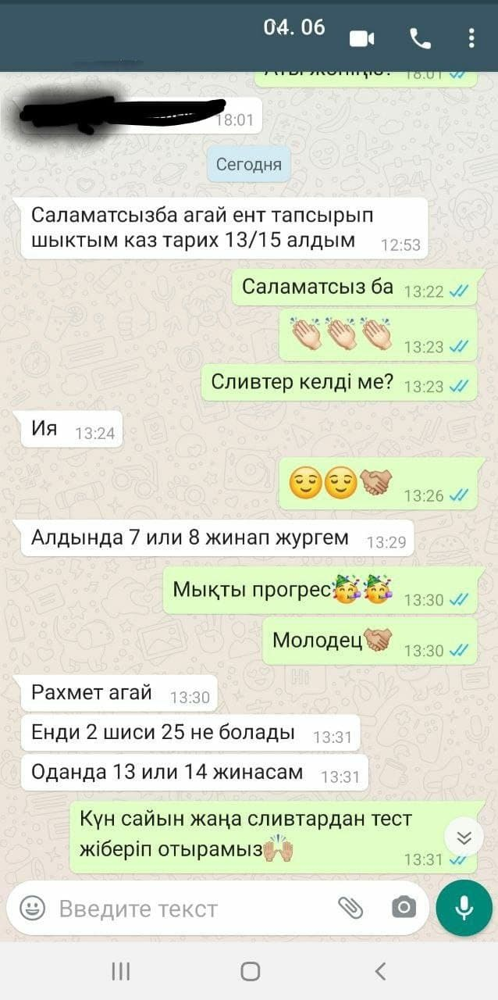
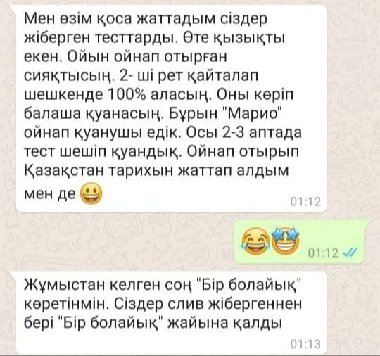
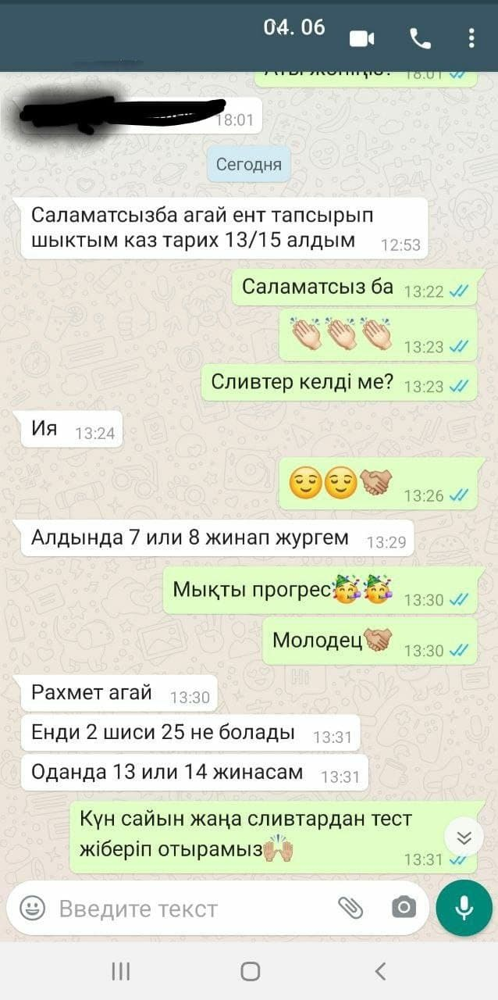
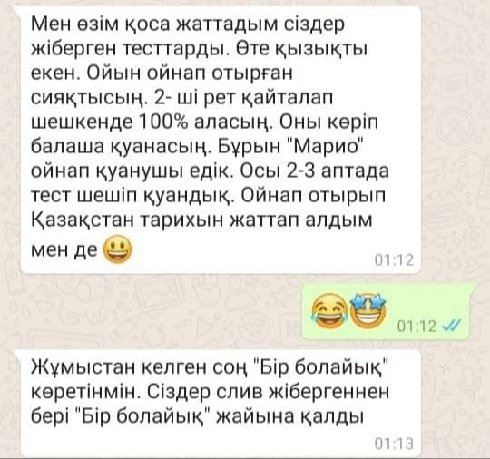

Hello
For 17 years now, it is possible to enter higher educational institutions of Kazakhstan with the help of the Unified National Test, the results of which are counted as entrance exams. The UNT is nothing more than an officially recognized form of testing and assessing knowledge for a complete secondary school like the Unified State Exam in Russia and the UPE in Ukraine. It is necessary to take the UNT for graduates wishing to get higher education in state universities of the country.
We sell 2,000 questions for each item using the quiz system, which will make the questions much easier to remember.
The test consists of 120 tasks covering 5 subjects: 3 compulsory (mathematical literacy, reading literacy, history of Kazakhstan) and 2 profile ones. The applicant is given 3 hours and 50 minutes to complete the test questions.
We present an approximate daily routine for a student in the final grade of 11-12, taking into account a healthy lifestyle. This schedule may not be suitable for everyone, but it is an example of productive time management.
| Time | Schedule of affairs |
|---|---|
| 06:00-06.30 | getting up, morning exercises (warm-up, jogging) |
| 06.30-07.30 | breakfast, preparation for UNT (1 subject, for example, history of Kazakhstan) |
| 08.00 – 13.30 | visit school lessons |
| 14.00-15.00 | lunch, walk in the fresh air, active leisure |
| 15.00-17.00 | preparation for the UNT (2 subjects, for example, mathematics and the Kazakh language) |
| 17.00-17.30 | dinner, break |
| 17.30-19.00 | homework |
| 19.00-20.00 | break, active games, evening gymnastics |
| 20.00-22.00 | preparation for UNT (2 subjects, for example, physics and geography) |
| 22.30 | sleep |
The process of writing the UNT is the most important critical stage, the culmination of all previous preparation. On the eve, you need to sleep well, relax and prepare mentally, and on the day of the exam, gather your strength and overcome the main enemy - excitement
The applicant must adopt the following rules:
 



If you are interested, you can leave your mail